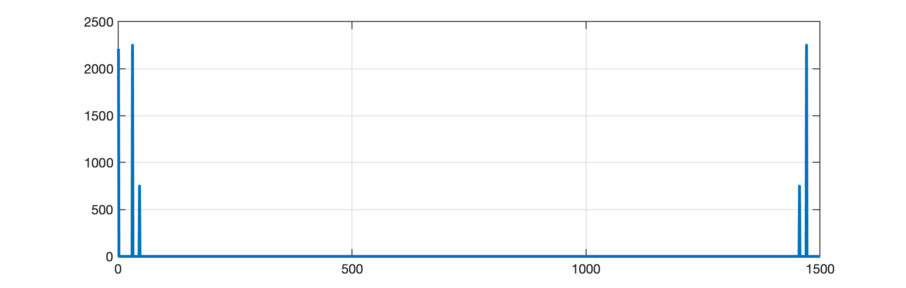
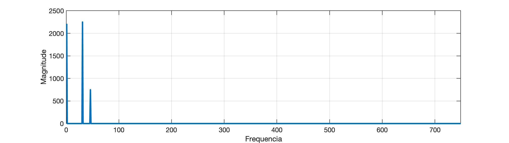
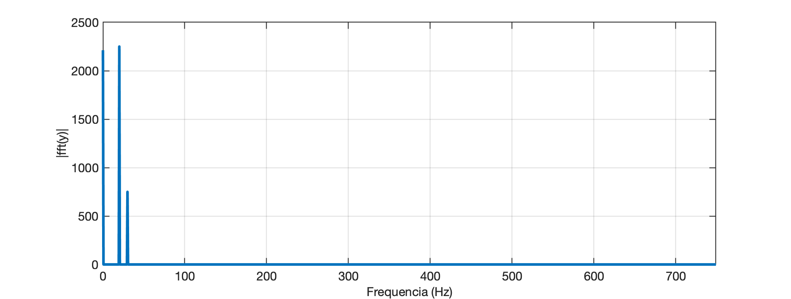
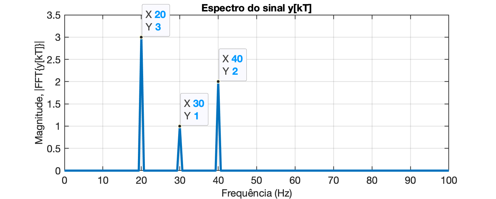

Koizumi Junsaku's twin dragons - Kennin-ji Buddhist temple (Kyoto)
Usando função fft do Matlab
Seja o seguinte exemplo:
Vamos sintetizar uma onda formada por 3 senóides de diferentes frequências, defasadas entre si. Podemos considerar que estamos amostrando este sinal usando a frequência de amostragem .
Então:
Usando o Matlab, poderia ser feito.
>> fs=1000;>> t=0: 1/fs: 1.5 - 1/fs; % até 1,5 segundos excluindo a última amostra>> size(t)ans = 1 1500>> f1=20;>> f2=30;>> f3=40;>> y=3*cos(2*pi*f1*t +0.2) + 1*cos(2*pi*f2*t -0.3) + 2*cos(2*pi*f3 +2.4);>> 0.2*180/pians = 11.459>> -0.3*180/pians = -17.189>> 2.4*180/pians = 137.51>> % Verificando dados dos vetores t e y:>> [t(1:10)' y(1:10)']ans = 0 2.4207 0.001 2.3613 0.002 2.2219 0.003 2.0045 0.004 1.7133 0.005 1.3542 0.006 0.93469 0.007 0.46395 0.008 -0.047653 0.009 -0.58874>> % Note que 1/1000 = 1/fs = T = período de amostragem (== 1 ms)Note que temos:
- uma senóide oscilando à 20 Hz () e adiantada de 0,2 radianos ();
- outra senóice oscilando à 30 Hz (), atrasada de -0,3 radianos ();
- uma terceira senóide oscilando à 40 Hz () adiantada de 2,4 radianos ().
O vetor acima, transformada num gráfico gera:
xxxxxxxxxx>> plot(t,y)>> title('Sinal')>> xlabel('tempo (segundos)')>> ylabel('Amplitude (Volts)')E teríamos o gráfico:

Realizando a fft() sobre este sinal, resulta:
xxxxxxxxxx>> Y=fft(y);>> length(Y)ans = 1500>> size(y)ans = 1 1500>> % os 2 vetores possuem o mesmo tamanhoAveriguando o conteúdo dos vetores:
xxxxxxxxxx>> y(1:5)ans = 2.4207 2.3613 2.2219 2.0045 1.7133>> y(1:5)'ans = 2.4207 2.3613 2.2219 2.0045 1.7133>> >> % Já o vetor com o resultado da FFT deve conter números complexos:>> Y(1:5)'ans = -2212.2 + 0i 5.9813e-13 + 4.3249e-13i 7.832e-13 - 5.609e-13i -1.4919e-12 - 2.356e-14i 9.0946e-13 + 1.7577e-13i>> % mostrando uma outra faixa de valores:>> Y(30:34)'ans = -6.3857e-13 + 5.4089e-12i 2205.1 - 447.01i 9.4815e-13 + 4.9884e-12i 4.9045e-12 - 1.7524e-12i -3.3064e-12 - 3.5547e-13i>> O vetor (vetor Y) é formado por números complexos porque representam amplitudes e fases das senóides presentes no sinal de entrada (vetor y).
Porém os dados brutos de são complicados para serem entendidos. É mais interessante mostrar a amplitude (magnitude) dos valores envolvidos com o vetor :
xxxxxxxxxx>> Y_mag = abs(Y);Podemos verificar a magnitude de na mesma faixa de valores já explorada anteriormente:
xxxxxxxxxx>> Y_mag(30:34)'ans = 5.4464e-12 2250 5.0777e-12 5.2082e-12 3.3255e-12>> Note que os valores como 5.4464e-12 são praticamente nulos (0 = zero).
Obs.: Dependendo do formato adotado para mosrtrar dados, o Matlab pode parecer que gera outra resposta:
xxxxxxxxxx>> format short>> Y_mag(30:34)'ans = 1.0e+03 * 0.0000 2.2500 0.0000 0.0000 0.0000>> Neste documento, está sendo usando >> format shortg.
Podemos transformar num gráfico o vetor :
xxxxxxxxxx>> figure; plot(Y_mag)Com isto, será gerada uma figura como:

Note que aparecem alguns picos (correspondentes às frequências das senóides presentes no sinal) e há vales. O vetor é composto por 1500 pontos porque nosso vetor de entrada para a função fft possuia 1500 amostras. O gráfico original da função fft é "refletido" entre seu lado esquerdo e seu lado direito (são simétricos). Para analisar o espectro resultante, basta então escolher um dos lados, normalmente o lado esquerdo. Podemos realizar um "zoom", separar o lado esquerdo na figura:
xxxxxxxxxx>> length(Y)ans = 1500>> length(Y)/2ans = 750>> axis([0 749 0 2500])O gráfico agora deve ter ficado como:

O detalhe é que o eixo X corresponde à frequência (mas não em Hz; na realidade, o cálculo da fft retorna a frequência na unidade de "bins", onde cada "bin" corresponde à ; quantidade de amostras do sinal de entrada) e o eixo Y corresponde à magnitude:

Podemos criar um vetor de frequências em Hz para o eixo X e melhorar um pouco o entendimento do gráfico anterior:
xxxxxxxxxx>> L=length(y)L = 1500>> eixo_f = (fs/L)*(0:L-1);>> length(eixo_f)ans = 1500>> figure; plot(eixo_f, Y_mag)>> axis([0 749 0 2500])>> xlabel('Frequencia (Hz)')>> ylabel('|fft(y)|')
Note que o intervalo de frequência onde termina a parte útil da FFT (lado esquerdo do gráfico) corresponde à metade do número de amostras multiplicado pelo fator bin. Podemos realizar um "zoom" na parte de baixas frequênicias e perceber que:
xxxxxxxxxx>> axis([0 100 0 2500]) % mostra até freq de 100 HzE o gráfico fica então:

e agora fica fácil de perceber que o sinal usado para a FFT possui componente DC (frequência nula, 0 Hz) e componentes nas frequencias de 20 e 30 Hz.
Ver também: Help Center da MathWorks: fft.
Para "corrigir" o eixo de magnitudes do espectro, devemos considerar que o algoritmo de FFT, escalona o vetor gerado, de um fator de (quantidade de amostras usadas). Então inicialmente temos que redimencionar o vetor fazendo a divisão por : . E depois temos que considerar o espectro "refletido" gerado pelo algoritmo FFT. Na realidade este espectro refletido é composto por conjugados complexos, e o espectro originalmente é bilateral (vetor abaixo). E ainda deve ser considerado que o primeiro elemento calculado no espectro, corresponde à frequência nula (0 Hz, nível DC do sinal).
Considerando os fatores anteriores, podemos gerar um novo gráfico do espectro do sinal de entrada , fazendo:
xxxxxxxxxx>> L=length(y);>> Y=fft(y);>> P2=abs(Y/L); % re-escalona magnitudes pelo fator L>> P1 = P2(1:L/2+1); % estamos interessados apenas na primeira metade do espectro>> P1(2:end-1) = 2*P1(2:end-1); % convertendo magnitudes para espectro unilateral>> f = fs/L*(0:(L/2)); % monta vetor das frequencias>> figure; plot(f,P1,"LineWidth",3) >> title('Espectro do sinal y(t)')>> xlabel("freq. (Hz)")>> ylabel('|fft(y)|')
O cálculo anterior poderia ser simplificado para:
xxxxxxxxxx>> L/2ans = 750>> f = (fs/L)*(0:L-1); >> figure; plot(f, Y_mag/(L/2));Que gera o mesmo gráfico anterior, mas com o gráfico ainda mostrando todo o espectro bilateral gerado originalmente pela função FFT:

Um zoom na frequencia até 100 Hz, usando o comando axis([0 100 0 3.5]), resulta em:

Calculando informação da Fase do sinal
Podemos ainda separar a informação de fase espectral do sinal de entrada:
xxxxxxxxxx>> Y_phase = angle(Y);>> f = (fs/L)*(0:L-1);>> figure; plot(f,Y_phase)>> xlabel("freq. (Hz)")>> ylabel('\angle (rad)')>> title('Fase do Espectro do sinal y(t)')>> axis([0 749 -pi pi])E obtemos a seguinte figura:

Este diagrama não parece tão útil quanto a magnitude do espectro do sinal.
No caso da obtenção do vetor de fase do espectro de um sinal, é melhor primeiro identificar os componentes frequências importantes no gráfico de magnitude do espectro do sinal e então, observar na janela de comandos do Matlab, a fase correspondente:
xxxxxxxxxx>> % Por exemplo, notamos que em 20 Hz ocorre um primeiro pico de magnitude>> f(20)ans = 12.667>> % Note que o elemento 20 do vetor dde frequencias não corresponde aos 20 Hz>> % Lembramos que antes definimos o fator "bin" como sendo fs/L, então>> 20/(fs/L)ans = 30>> f(30)ans = 19.333>> f(31)ans = 20>> Y_phase(31) % retorna a fase na frequencia dos 20 Hz (em radianos)ans = 0.2>> % Testando para a freq. de 30 Hz:>> 30/(fs/L)ans = 45>> f(45)ans = 29.333>> f(46)ans = 30>> Y_phase(46)ans = -0.3Resumindo
A sequencia final de comandos que leva ao espectro de Magnitude do sinal de entrada pode ser feito da seguinte forma:
xxxxxxxxxx>> Y=fft(y);>> L=length(Y);>> P2 = abs(Y/L);>> P1 = P2(1:L/2+1);>> P1(2:end-1) = 2*P1(2:end-1);>> f = fs/L*(0:(L/2));>> figure;>> plot(f,P1,"LineWidth",3)>> title('Espectro do sinal y(t)')>> xlabel("freq. (Hz)")>> ylabel('|fft(y)|')>> % aplicando um "zoom" na região até 100 Hz:>> axis([0 100 0 3.5]) % mostra até freq de 100 Hz
Se for desejado mostrar uma espécie de tabela com os resultados obtidos:
xxxxxxxxxx>> [f(1:10)' P1(1:10)']ans = 0 1.4748 0.66667 9.8415e-16 1.3333 1.2844e-15 2 1.9895e-15 2.6667 1.2351e-15 3.3333 2.7656e-16 4 3.3826e-16 4.6667 1.6592e-16 5.3333 2.9896e-16 6 2.0694e-15>> [f(25:35)' P1(25:35)']ans = 16 4.9917e-16 16.667 2.2106e-15 17.333 2.3668e-15 18 4.0074e-15 18.667 5.6471e-15 19.333 7.2619e-15 20 3 20.667 6.7703e-15 21.333 6.9443e-15 22 4.434e-15 22.667 3.1823e-15>> Fim.
Exercícios Propostos.
Sintetize um sinal oscilante usando a eq. abaixo:
onde amplitude (de pico) da onda, frequência da onda (em Hz) e defassagem do sinal (em radianos).
Plote as diferentes ondas para 1,5 ciclos da mesma quando:
a) ;
b)
Gráfico desta parte:

c)
d)
Gráfico destes últimos 2 itens (comparados com uma cosenoóide defasada de ):

Obs.: considere para os 3 casos, e Hz.
Perceba que:
-- ou seja, uma senóide = coseno atrasado de .
Possível solução:
xxxxxxxxxx>> A=1; f=200;>> T=1/f; t_fim=1.5*T;>> t=linspace(0,t_fim,500); % 500 pontos no intervalo >> phi=0;>> y=A*cos(2*pi*f*t+phi);>> figure; plot(t,y)>> t_fimt_fim = 0.0075>> axis([0 t_fim -1 1])>> title('cos(\omega t + 0^o)')>> % incluindo os outros casos à serem simulados>> phi_b=-90;>> yb=A*cos(2*pi*f*t+phi*pi/180);>> yb=A*cos(2*pi*f*t+phi_b*pi/180);>> phi_c=60;>> phi_d=-60;>> yc=A*cos(2*pi*f*t+phi_c*pi/180);>> yd=A*cos(2*pi*f*t+phi_d*pi/180);>> close all>> % 1o-gráfico>> figure; plot(t,y,'b-', t,yb,'m-')>> axis([0 t_fim -1 1])>> grid>> xlabel('tempo (segundos)')>> ylabel('Amplitude (Volts)')>> title('Sinais')>> legend('cos(\omega t+0^o)', 'cos(\omega t-90^o')>> % 2o-gráfico>> figure; plot(t,y,'b--', t,yc,'b-', t,yd,'m-')>> xlabel('tempo (segundos)')>> ylabel('Amplitude (Volts)')>> title('Sinais')>> legend('cos(\omega t+0^o)', 'cos(\omega t+60^o)', 'cos(\omega t-60^o)')>> axis([0 t_fim -1 1])
Fernando Passold, em 29/03/2024